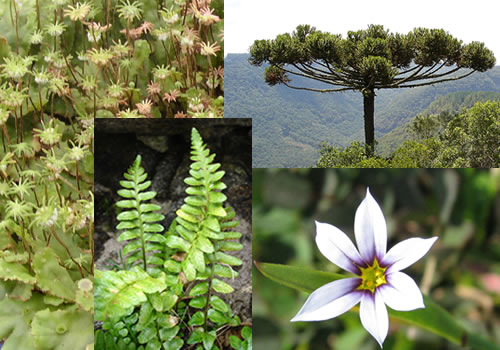
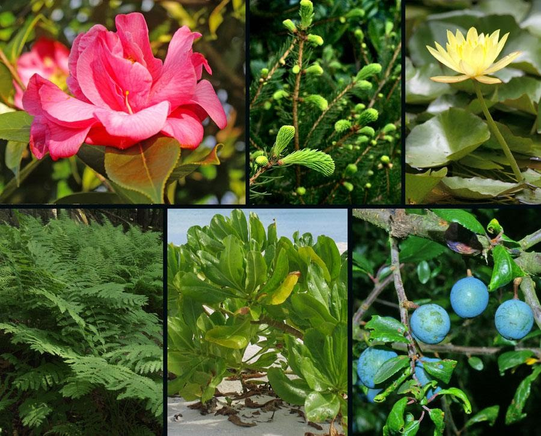
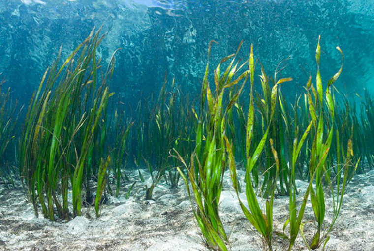
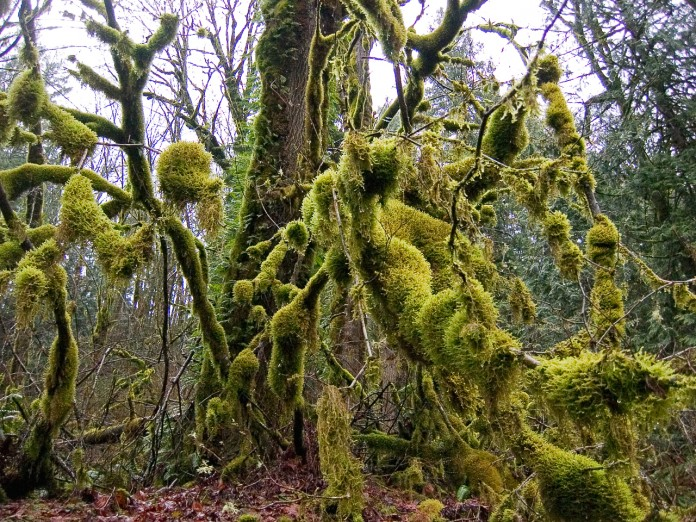
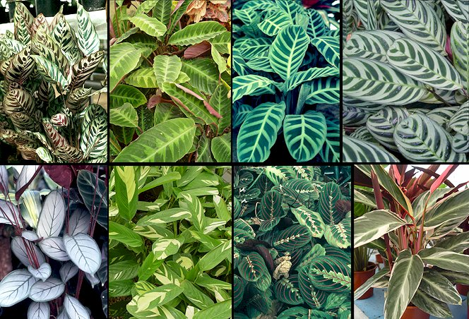
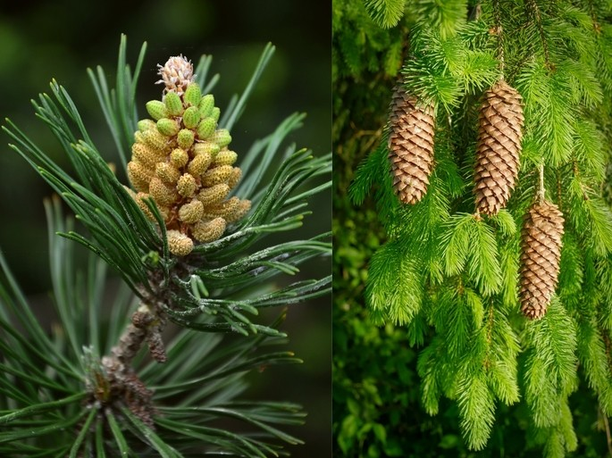
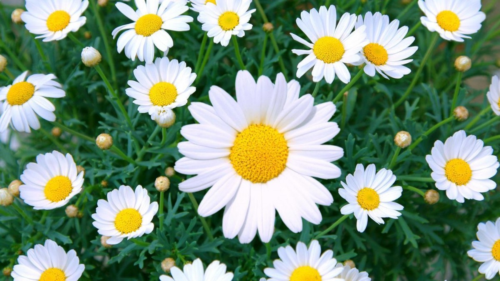
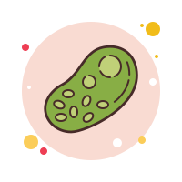
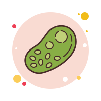

| ¿Qué es el reino vegetal? |
|---|
|

El reino Plantae, también conocido como reino vegetal, es uno de los 5 reinos taxonómicos existentes (reino Animalia, reino Plantae, reino Fungi, reino Monera y reino Protista)
y está formado por organismos multicelulares, eucariotas, que realizan la fotosíntesis. Incluye todas las plantas terrestres, las acuáticas y algunas especies de algas.
Está constituido por más de 390.000 especies conocidas, lo que le convierte en el segundo reino más grande.
La aparición de las plantas en la Tierra tuvo lugar en el Ordovícico, aunque se piensa que las primeras plantas de tipo alga pudieron aparecer hace más de mil millones de años.
Se trata de un grupo con larga historia evolutiva, lo que se ha traducido en una enorme diversidad de morfologías y adaptaciones para la supervivencia de estos organismos, tan esenciales para la vida en el planeta.
|
| CARACTERÍSTICAS |

De manera general, las plantas presentan una serie de características en común, aunque no siempre se dan todas en las diversas especies, ya que,
para que un ser vivo sea considerado como planta, es más importante su linaje evolutivo que sus características.
Estas son las principales características del reino Plantae:
- Son organismos multicelulares y eucariotas.
- Son primariamente sésiles y viven sujetos al sustrato. Debido a esto, han desarrollado mecanismos de defensa como la producción de sustancias tóxicas en hojas, flores o frutos.
- Son organismos fotosintéticos, de manera que emplean la energía de la luz solar y el dióxido de carbono atmosférico para sintetizar nutrientes, convirtiendo el CO2 y el agua en azúcares y oxígeno.
- Algunas plantas han evolucionado y desarrollado otras formas de nutrirse diferentes a la fotosíntesis. Existen especies que son parásitas y se alimentan de los nutrientes de otras plantas.
- Sus células vegetales (eucariotas) tienen una estructura especial que cuenta con una pared celular compuesta de pectina y celulosa, así como con una gran vacuola central.
- Las células vegetales presentan orgánulos especiales llamados cloroplastos que contienen un pigmento fotosintético llamado clorofila y donde tiene lugar la fotosíntesis.
- Las plantas son las mayores productoras de oxígeno y regulan la cantidad de dióxido de carbono en la atmósfera.
- Las plantas actúan como base de la cadena trófica en casi todos los ecosistemas y su actividad ecológica es determinante en diversos ciclos químicos.
- Se reproducen sexual y asexualmente. Sus órganos reproductores generan embriones multicelulares.
- Tienen un ciclo vital con alternancia generacional en el que se alternan dos fases: una generación de gametófito haploide y otra de esporófito diploide.
- Presentan una enorme capacidad de adaptación a las diversas condiciones ambientales de los distintos ecosistemas existentes, como en las altas temperaturas y la notable aridez de los desiertos o el frío de los polos.
|
| CLASIFICACIÓN |
|---|
PLANTAS SIN FLOR

Las plantas sin flor se dividen en tres grupos: talófitos, briófitos y pteridófitos.
- Talófitos (algas):plantas simples, autotróficas y no vasculares.
Tienen órganos sexuales unicelulares y no forman embrión. Según los hábitats en los que crezcan,
aparecen formas especializadas como las criófitas (habitan en zonas nevadas y heladas), las termófitas (en aguas calientes),
las epífisis (se desarrollan sobre otras plantas) o las endófitas (crecen en el interior de otras plantas).

- Plantas briófitas:son las plantas terrestres más simples y primitivas. Típicamente, ocupan hábitats húmedos y sombríos,
aunque otros se desarrollan en condiciones de extremas aridez o acuosidad. Se reproducen sexualmente; presentan un órgano sexual masculino llamado anteridio y otro femenino llamado arquegonio.
Las plantas briófitas se caracterizan por poseer tallos y hojas pero carecer de raíces. En cambio, presentan unas estructuras conocidas como rizoides adheridas a la superficie por las cuales absorben agua y minerales.

- Plantas pteridofitas:son plantas mayoritariamente terrestres que ocupan zonas en sombra y se caracterizan por carecer de semillas y flores,
aunque las hojas producen esporas mediante las cuales se pueden generar nuevas plantas.
El grupo está compuesto por cuatros sub-filos: Psilopsida (las plantas vasculares más antiguas, con una mayoría de especies fósiles), Lycopsida (cuerpo diferenciado en raíz, tallo y hojas pequeñas de una sola vena simple),
Sphenopsida (presenta tallo con nudos e internudos) y Pteropsida (cuerpo diferenciado en raíz, tallo y hojas megafilas)
|
PLANTAS CON FLOR

También conocidas como plantas con semillas, las plantas con flor se dividen en gimnospermas y angiospermas.
- Gimnospermas:son el grupo de plantas que no tienen flores ni frutos verdaderos pero sí producen semillas, las cuales se encuentran desprotegidas,
dispuestas de manera visible en las hojas o en el tallo y forman conos o piñas.
Son plantas leñosas, con aspecto arbóreo que tienen polinización anemófila (por el viento)
y dioicas (de sexos separados).

- Angiospermasson plantas con flor, fruto y semillas. Son el tipo de plantas más abundante y ubicuo de las plantas vasculares en la actualidad.
Presentan los óvulos en ovarios huecos, los cuales se desarrollan hasta dar lugar a una fruta y, dentro de estos, los óvulos del interior crecen y dan lugar a las semillas.
Las angiospermas se diferencian en dos grandes grupos: monocotiledóneas y dicotiledóneas. Los cotiledones son almacenes del alimento necesario para la germinación de los vástagos.
|

 
